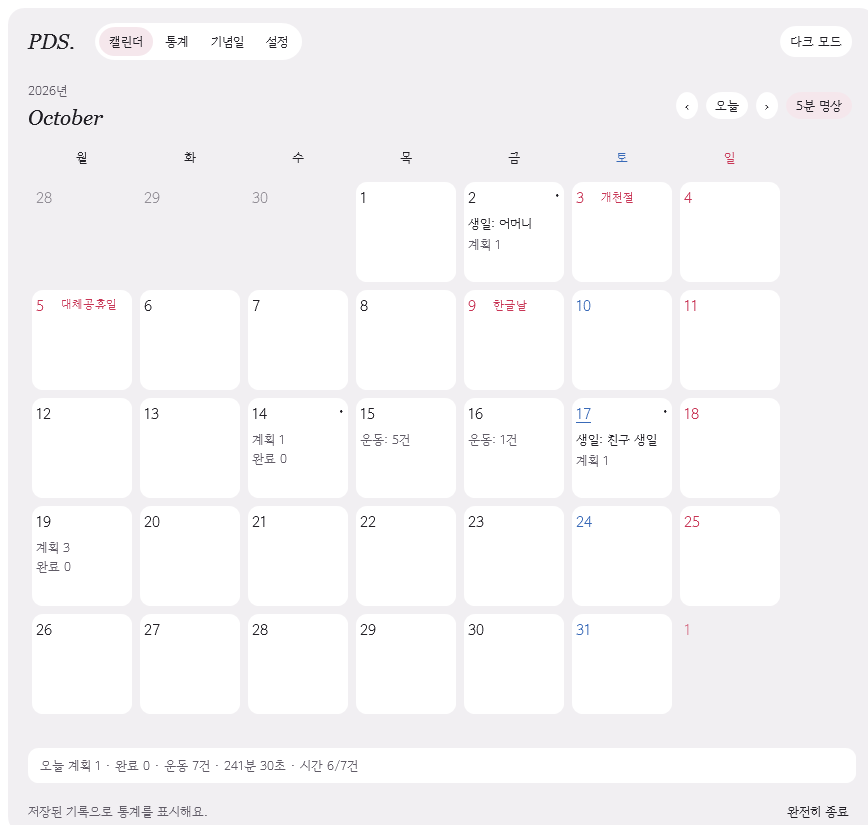
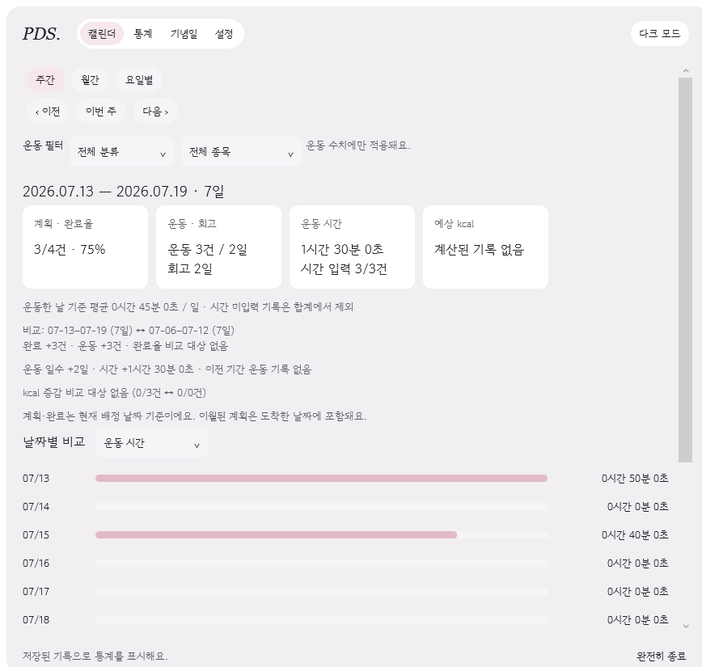
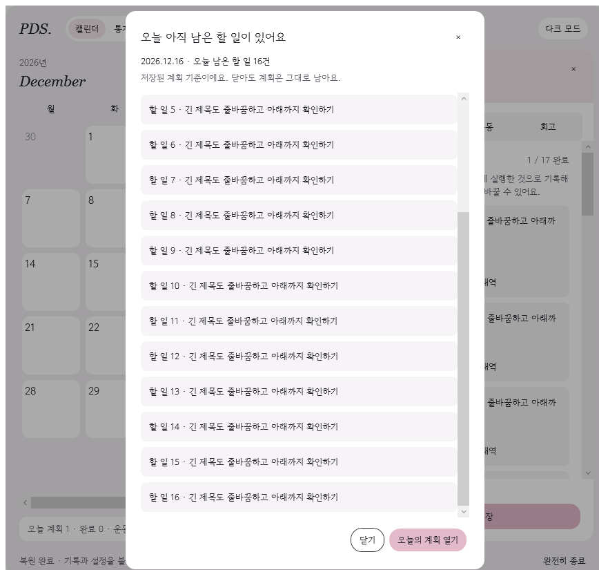
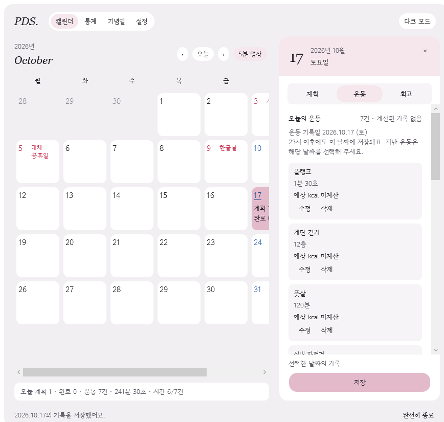
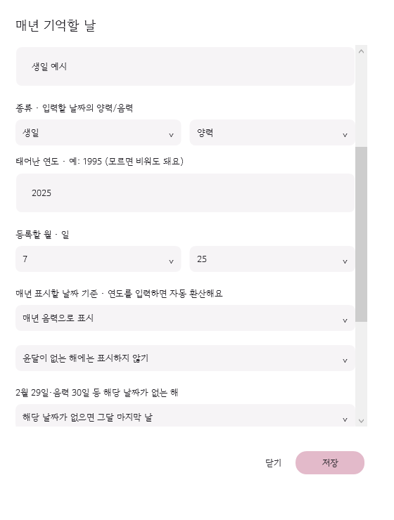

Plan · Do · See
계획과 완료 상태, 선택 시간·메모, 하루 회고 세 칸을 저장합니다. 미완료 계획은 23시에 다음 날로 이월합니다.
날짜별 계획·운동·회고를 한곳에 기록하고 주간·월간·요일별 통계로 확인하는 개인용 캘린더입니다. 인터넷 연결 없이 PC에 저장합니다.
Windows 11 x64에서 검증 · 런타임 포함 · ZIP 전체를 풀고 START-TEST.cmd 실행

계획과 완료 상태, 선택 시간·메모, 하루 회고 세 칸을 저장합니다. 미완료 계획은 23시에 다음 날로 이월합니다.
22개 종목의 시간·횟수·층수를 직접 입력합니다. 체중과 지원 활동 기준을 갖춘 기록만 예상 kcal을 계산합니다.
계획 완료율·운동 일수·시간과 계산된 kcal을 확인합니다. 운동 분류를 고르거나 이전 기간과 비교할 수 있습니다.
900×880 고정 창에서 기록합니다. 양력·음력 생일·기일을 매년 표시하고 한국2025~2027년 공휴일을 구분합니다.
선택형 5분 명상 뒤 오늘 남은 계획을 알립니다. 둘 다 언제든 닫을 수 있고, 닫아도 계획은 그대로입니다.
파일로 내보내도 앱의 기록은 유지됩니다. 복원은 내용을 확인한 뒤 현재 기록 전체를 교체합니다.
16일 23:59에 16일 운동을 저장하면 16일로 집계합니다. 자정 이후 늦게 입력할 때도 수행한 날짜를 선택하세요. 운동과 회고는 계획의 23시 자동 이월 대상이 아닙니다.
exe를 직접 실행하면 기존 개인 저장소를 사용합니다. 이번 시험은 START-TEST.cmd로 진행해 주세요.




저장·통계·날짜 경계와 미저장 입력 보호를 자동 검사했습니다. 작성자는 최신 글씨 크기와 달력 배치를 수용했습니다. 직접 조작 점검과 자동 검사를 구분합니다. 실제 7일 사용·로그인·절전 복귀·추가 사용자 점검은 아직 완료하지 않았습니다.
초기 웹 초안에는 소형 모드 등 이전 설계가 남아 있으며 현재 Windows 앱과 다릅니다. 이 페이지와 웹 초안은 Windows 앱의 기록을 읽거나 저장하지 않습니다. 실제 기록·통계·트레이 기능은 내려받은 Windows 앱에서 확인하세요.
초기 웹 디자인 참고 화면 열기 ↗